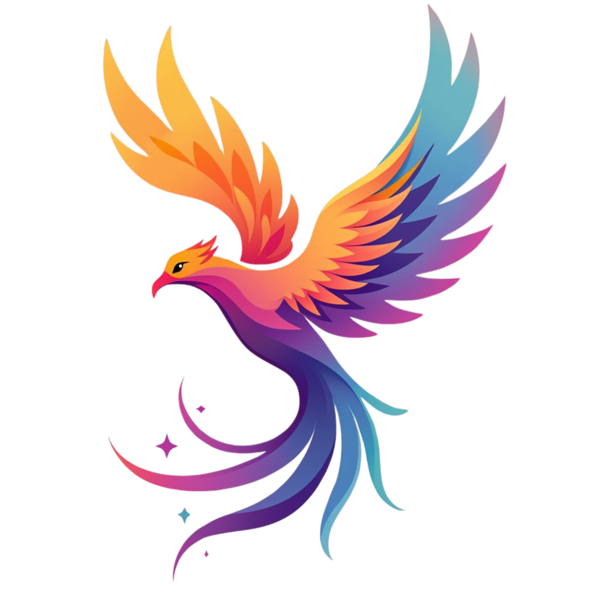

YUV.AI Image Prompter
Drop your image here or click to upload
Processing your image...
📸 Vision Description
✨ Generated Prompts
Cinematic Style
Dramatic Style
Artistic Style
💬 Refine Prompts
0%
Analyzing Image...